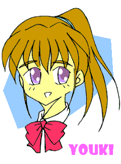
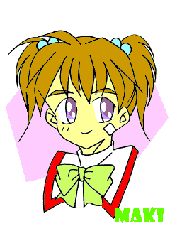
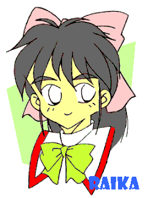
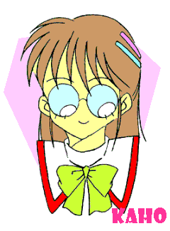
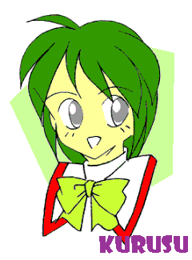
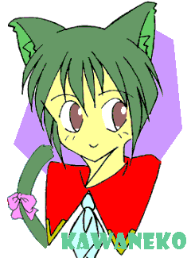
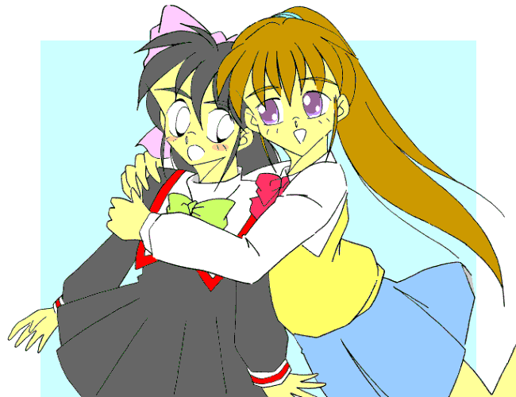

戻る
少年少女文庫＆妖精さんの本だな合同大阪オフ開催記念♪
－「Ｐ．Ｆ．キャリアー」×「らいか大作戦」①－
邂逅・・・？
ＨＩＫＯ
鷹飼家の朝は早い。
家庭を放りだして遊んでいる両親に代わって家を預かっている少女が早起きだからである。
「ん・・・・・・と！」
現在は午前３時。真っ赤なジャージの上下を身につけた彼女が、背伸びをしながら門構えの外に出てきたところである。
普通ならアクビのひとつもしそうな時間帯なのに、そのあどけないほどの少女顔には、睡魔のかけらも残ってはいない。
「さてと・・・。行きますか♪」
１５０センチそこそこの小柄な肢体、野暮ったいジャージ姿でありながら、その身体に健康的な色気を漂わせているのは、そのメリハリの効いたスタイルのせいであろう。要するに出るとこ出ていて、締まるとこ締まっている、典型的なトランジスタ・グラマー。
顔の方も文句の付けようもない、完全無欠の美少女ぶりである。やや大きめの瞳には凛とした光を宿し、小振りな鼻は品よく上を向いている。腰まで伸びたしなやかな栗毛色の髪は、活動的なポニーテールに結わえられ、前髪の所々が自己主張するようにピンと立っていて、絶妙のアクセントを形作っている。
彼女が鷹飼家の長子、優輝である。誰が見たって「美少女」だと主張するであろう彼女だが、その内面を知る者以外には「もういくつか」の「鷹飼優輝」像があることなど、知り得ようもない。
なぜならそれを知ることは、即ち生命の危険を覚悟することになることだからだ。
――鷹飼優輝。彼女こそは、気まぐれな戦女神と酔狂な悪魔が手を組んで産み出されたような、冗談抜きに危険な存在そのままなのかも知れない・・・。
「・・・黙って聞いていれば好き勝手言ってるな、え？ ボクのどこが危険だって？」
・・・・・・・・・・・・（汗）。
「・・・さてと、馬鹿作者は放っておいて、そろそろ行くか」
虚空に向かって意味不明（！）のセリフを吐きだしてから、優輝はおもむろに地面を蹴った。
たんっ――！
次の瞬間、小柄な優輝の身体は天空高く舞い上がり、平屋建ての家を飛び越えて二軒先の屋根へと到達する。安普請のトタン屋根の上に降り立ったにもかかわらず、まるで羽毛でも踏みしめたようなわずかな軋み音しかしない。再びわずかな踏切音が立つと、優輝の姿は漆黒の空へと飛翔していく。
物理法則がどこかで無視されているような――と言うより、何かの冗談のような光景である。
虚空を切り裂くように飛び跳ねている優輝は、おもむろにジャージのポケットからリング状にまとめられたテグス糸を取り出すと、鋭い手つきでそれを投じた。

「それっ！」
先端に錘（おもり）が付けられたテグスは、一直線に伸びると街灯に巻き付き、中空にある優輝の飛行の軌道を、くんっ、と修正する。振り子のように弧を描く優輝の身体は、次の瞬間・・・
ずべっ！！
・・・採石場の砂山に激突していた。
「くはっ！ げほっ！！」
湿った砂を口いっぱいにほおばってしまった優輝は、真っ赤になった顔を思いっきりしかめながら、必死に吐きだす。べそをかきながらしきりにジャージの袖で顔をぬぐう優輝の姿は、ネコのようにも見える。世にも情けない顔つきで「ふにゃ～ん」などと呟いていればなおさらである。最後にぺっぺと唾液ごと飛ばしながら、しみじみとつぶやいた。
「・・・やっぱ、日本でスパ〇ダーマンの真似をするのは無理があるか・・・」
昨日レンタルしてきたＤＶＤの映画を観て、思いっきり影響を受けてしまった優輝である。・・・意外と単純な性格のようだ♪
「うるさいな！ ほっといてよ！！」
先日の「ブラック商会壊滅事件」から、一ヶ月ほど経っていた。
幻の「Ｐ．Ｆ．ウィルス」なる細菌兵器の影響により、「かなり強い少年」から「化け物のように強い少女」へと、驚異の性転換を遂げた鷹飼優輝だったが、意外にもそれに対する混乱と言った事態には、全然いたっていない。何より当の本人が、
「ま、いーか♪」
・・・のひと言で事態を締めくくってしまったのだから、混乱など起きるワケもないのだが。
確かに混乱こそ起きなかったものの、あの事件の後で突如転校してきた「黒川ありす」なる美人転校生の登場や、彼女をめぐってのドタバタ騒ぎが頻繁に起こっていたので、優輝もまた否応なく巻き込まれて、この一ヶ月、かなりあわただしい毎日を過ごしていたものだ。
だが祭りがあれば、終わりの日もまた来る。
正確に言えば、学校の生徒たちも毎日続くお祭り騒ぎに飽きてきたのだろう。事態は次第に沈静化し、平穏、と呼んでも良い日々が戻ってきたように見える。
もっとも両親不在の鷹飼家を預かる優輝にしてみれば、お祭りであろうが退屈な日常であろうが、こなさなければならないスケジュールは依然として存在する。
このところの日課になっている身体を慣らすためのトレーニングを終えると（本日のメニューは蜘蛛男のマネゴト♪）、その足で朝刊の配達に向かう。
ひとつの専売所から本日の分の朝刊の束を受け取ると、
「ふんぬ～～ッ！！」
驚異的な圧力を加えて一本の筒っぽにしてしまう（大きさは賞状入れくらいであろうか？）。それを小脇に抱えて次の専売所にて、別の朝刊とスポーツ紙を受け取る。
「うおりゃあああ～～ッ！！」
・・・こんな事を繰り返して、一日に五件の専売所を日参しているのだった。
―― 一日に五区域の配達の掛け持ちのできる人間などいるわけはないのだが、そんなことは優輝の知ったことではない。本人にしてみれば、
「トレーニングができて、バイト代も大幅に稼げるんだから、別に問題ないじゃん？」
と、言うことになる。ちなみにバイト先の店主たちは、この事実を知らないらしい。
言っても信じないであろうが・・・。
二時間ほどですべての配達を終わらせ（！）、家に戻ると朝食のしたくである。
北海道産のクズ昆布（形が悪いだけ）と枕崎で貰った二級品（割れているだけ）の本節で出汁をとり、朝刊を届けた豆腐屋から貰った豆腐と油揚げを具にして味噌汁を作る。仕上げに刻んだアサツキを散らすのがポイントである。
鷹飼家の朝食は基本的に和食である。作る優輝の趣味の問題もあろうが、この点で洋食好みである妹の真輝とは、つねに議論を重ねる原因ともなっている。
「朝はやっぱトーストとコーヒーじゃない？ それにベーコンエッグとサラダを添えてさ。・・・いまどき味噌汁に納豆、海苔の佃煮なんて、時代遅れもいいとこよっ」
「日本の朝食ってのは、味噌汁って相場が決まってるの！ 真輝も馬鹿じゃないんだから、自分の好みを人に押しつけるのはやめた方が良いんじゃないか？」
「押しつけてるのはお姉じゃないさっ！ ちょっとワキでパンを焼いてくれれば済むものを、面倒くさがって」
「だってひとりで味噌汁すすってるのも侘びしいもんね。文句があるなら、早起きして自分で作ったら？」
「・・・・・・あたしが朝弱いの知ってるくせに」
これで朝の議論は終了である。バリエーションやパターンは若干の変化があるが、なぜか寝ぼすけの真輝は、「自分で作ったら？」のひと言で轟沈することになっている。
たまには優輝が折れて、ホテル風の朝食を用意することもあるが、その時はその時で、「ベーコンはパリパリになるまで焼かなきゃダメ」とか、「なんで目玉焼きを両面焼いてくれないの？」とか、文句が絶えることはない。
結局のところは、真輝にしても優輝にしても、言い争うことでコミュニケーションを取っているわけだ。じゃれ合いのようなものだろう。
これを評して、

「ちっちゃいネコさんと、ムネのちっちゃいネコさんのきょーだいみたいだね♪」
と、のたまったのは、ふたりをよく知る幼稚園児であったのだが・・・その表現の的確さに多くの人々が納得の呻きを上げたものである。
言われた当人たちには、大いに異論があったようだが。
それはさておき・・・。
「「行ってきま～す」」
姉妹そろって誰もいない鷹飼家に声を上げる。「行ってらっしゃい」のセリフが聞こえなくても、登校前の挨拶は、今は無き（いないだけ）両親から言われた大切な教えのひとつなのだ。
「・・・ボク、なんでこんなこと守ってんだろ？」
思わず自問してしまう優輝である。
実際に首を傾げている彼女の肩に、なにか小さな生き物が跳び乗ってきた。鷹飼家のペット兼アイドルのハムスター『ちょこ』である。栗毛と白の斑の毛皮をもった愛らしいヤツであり、さらにはただのハムスターとは思えないほどの高い知能も持っており、『ただものではない』度合いでは、主人にも決して引けを取っていない。跳び乗った『ただものではない同居人』は小さな手足をちょこまかと動かして、ポニーテールに飛びつくと、泳ぐように頭頂部にたどり着く。
ちゅっ♪
「こら、ちょこ」
軽く手を動かして、アタマのハムスターをつまみ取る。
――本来『ネズミ嫌い』である優輝だが、一ヶ月の同居生活の末、ようやく『ちょこ』は家族の一員として彼女にも認められたようである。あれやこれや、表記できない騒動も数多く存在したようではあるが・・・。
首根っこをつままれたネズミの眷属は、持ってこられた優輝の眼前で、挨拶をするように右前足を掲げて見せた。
ちゅっ♪
「・・・相変わらずアタマいーねー、お前。もしかして連れて行けって？」
ちゅっ♪
こころなしかニコ眼になったような気がする。優輝はそんなことをふと想像し、苦笑を漏らした。やがてにっこりと微笑むと、つまんだままの鷹飼家のアイドルに顔を寄せた。
「・・・ま、いっか。大人しくしてるんだよ？ でないとネコ娘に食われちゃうぞ？」
冗談まじりにそんなことを口にして走り出す。宙に投げ出されたちょこは、空中でじたばたしながら優輝の髪にしがみつき、揺れに合わせるようにして身体を運び、あっという間に優輝の肩口に鎮座してしまった。
・・・やはりただものではない、このネズミ・・・。
さて、一方場所は変わって（と言っても直線距離にして２㎞も離れてはいないが）、ここは市内某所の高級マンション。
ここの一室に、『戸増』と表札の掲げられている部屋がある。世帯主は小学生だったりするのだが、あらためて突っこんだりしなければ意外とばれないものである（さすがに住民票には細工をしてあるが）。
世帯主の名は戸増頼香こと、ライカ＝フレイクス。若干１１歳にして惑星連合軍所属の『少尉さん』である。クセのないつややかな黒髪を腰まで伸ばした類い希なる美少女で、五年後、十年後にはさらなる進化が見られるであろう、ともっぱらの評判である。
言動のがさつさと、けんかっ早さを治せば、と言う条件付きではあるが・・・。
戸増家の朝もまた早い。とは言え、せいぜい午前５時くらいではあるが。
軽やかな電子音の目覚まし時計で起き出し、簡単なトレーニングウェアに着替えて、頼香はジョギングに出る。コースは川沿いの土手から街中までを軽く流す、簡単なものだ。
数ヶ月前から、頼香はこの『朝のジョギング』にハマっている。通常なら衛星軌道上に駐留している母船『さんこう』のトレーニングルームで汗を流すのだが、もともと早起きが苦にならない性質だし、暁の中を走るのは気持ちの良いものだ。
３０分ほど走ってマンションに戻る。集合ポストから新聞を三種類取って部屋に入る。通常のものと頼香愛読のスポーツ紙、もうひとつの経済紙は同居している相棒用だ。
家に戻るとすぐに浴室に入ってシャワーを浴びる。ほてった身体にぬるめのお湯が流れて、汗を洗い流していく。この時間は、頼香のもっとも好きな瞬間である。心身共にリフレッシュされて、あらたな一日をスタートさせるきっかけともなっているからだ。
シャワーの仕上げに、頼香は洗面器に汲んで置いた冷水を、えいやっとばかりに頭からかぶる。全身に冷たい感覚がほとばしり、頼香の幼い肢体を一気に硬直させた。
「―――――っ・・・！」
数瞬の自失の後、頼香の精神は急速に高揚していく。開いた瞳には活力があふれ、やや太めの眉は挑戦的な角度を描き、そして口からは気合いの入ったセリフが発せられる。
「おっし！ 行くか！！」
意気揚々と浴室を出て、最初に頼香が行うことは――
自慢の黒髪のお手入れである♪（ちなみに３０分以上時間をかける）
「・・・なんだこれ？」
「お茶漬け・・・ですよね？」
「どうかしたんですにゃ？」
朝食である。頼香と同居人兼現地協力者の庄司果穂、そして昨夜から（なぜか）遊びに来ているネコ耳少女の「かわねこ」が食卓を囲んでいる。
かわねこは、外見のとおり地球人ではない（――ことになっている）。猫を祖先に持つ異星人「キャロラット」の一族のひとりで、最年少少尉と呼ばれている頼香と同じ、１１歳の少尉さんである（――ということになっている）。
最年少であるがゆえに、年上だらけの駐留基地『TS９』内で頼香が唯一タメ口で話せる貴重な友人なので、仕事でTS９に滞在している時にはなにかしら理由を付けて、頼香は彼女とつるむことが多い。
もっともかわねこは基地内で奇妙に人気があって、常につきまとっているクマ耳の『ポリノーク』人などが他人の無用な接触を拒んでいたり、なによりかわねこ自身、よく行方不明になったりするので、頼香も常に彼女に会えるわけではないのだが・・・。
「二日酔いの親父じゃあるまいし、なんで朝っぱらからお茶漬けなんだ？ しかもワサビ茶漬けだし・・・」
頼香の苦言に「一宿一飯のお礼」とばかりに朝食を用意したかわねこは、内心どきりとする。・・・たしかに昨夜はマタタビ酒を飲み過ぎたが・・・。
「天城の三年もののワサビが手に入ったのにゃ。せっかくだから新鮮なうちに食べた方が美味しいし、お茶漬けなら二日酔いにも――じゃない、和食の範疇だから、良いと思ったのにゃ」
「・・・たしかに朝メシは和食と決まってるけどね、ウチでは」
かわねこの（やや）苦しい言い訳に、頼香はあえて突っこまず、苦々しげに目前のドンブリに目をやる。好き嫌いのない頼香といえど、味覚がお子様である以上、ワサビやカラシなどの刺激物はさすがに苦手と見え、どうやって攻略するかの方に頭を使わざるを得ないのである。
捨てる？ とんでもない話である。頼香は貧乏性なのだ。
と、そこまで考えて頼香は訝しげな表情になった。
「・・・なんでキャロラットのかわねこが和食なんて知ってるんだ？」
「そっ・・・それは・・・」
「私が教えたんですよ。私も朝食は和食党ですし」
頼香に突っこまれて狼狽するかわねこに、果穂が助け船を出した。むろんウソである。下手に詮索されてかわねこの正体がバレたりしたら・・・。
面白くないじゃありませんか！
――結局のところ、庄司果穂という少女にとってものごとの判断基準は、
「自分が楽しめるかどうか」
・・・に尽きるのかも知れない。良い根性をしている・・・。
ただかわねこを助けるという大義名分があったにせよ、おのれの欲望に従ったこの行為は、いらぬ代償を生じさせたようである。果穂の言葉を聞いた頼香の瞳がきらりと光った。

「そーか。じゃ、このワサビ茶漬けは果穂の発想ってワケだよな？ お前が教えたわけだから」
「・・・え？」
「おまえ、俺がワサビ苦手なの、よーく知ってるはずだよな？」
「えっと・・・その・・・」
ちなみに味覚がお子様なのは、果穂もまた同様である。寿司はすべてサビ抜きだし。
「今日の朝メシはお・ま・え・が、責任持って処理しろよ？ 捨てたりしたら、承知しねーからな？」
世帯主の冷たいひとことに、果穂は滂沱の涙を流した。「可愛い女の子が朝からお茶漬けすするなんて・・・可愛くない・・・」などと呟くのを無視して、頼香は澄まし顔で新たによそったご飯に味噌汁をぶっかけてかき込む。かわねこが申し訳なさそうな表情で、小声で果穂に謝る。
「ごめんなさいですにゃ。ボクのせいで・・・」
「・・・いいんですよ。かわねこさんのせいじゃありません。私が迂闊だったんです」
果穂は泣き顔のまま、鷹揚な答えを返す。やがて目前のドンブリに目をやり、ややあって右手に箸をつかむ。
「・・・・・・」
濃緑色のドンブリに飯が盛られ、たっぷりの刻み海苔、軽く炒られた白ゴマがふりかけられ、中央に新鮮なワサビが鎮座していた。サメ皮のオロシで擂られたねっとりとした触感を持つ、極上品のワサビである。味のわかる大人であれば、しみじみと日本人に生まれた幸福を味わうところであろうが・・・。
「私は可愛い女の子なんです。こんなおじさん好みのメニューの味なんて、わかるわけがありません」
「・・・悪かったにゃ？ おじさん好みで」
ぶーたれるかわねこを無視して、果穂は意を決してドンブリを手に取った。
急須を傾けて、香ばしい薫りの玄米茶をたっぷりと注ぎ、山盛りのワサビを突きくずす。そしてそのまま口の中にさらさらと流し込んだ。
「―――っ！」
香ばしい玄米茶の薫り、繊細な海苔の味、ゴマの食感、それらは鼻を抜けるようなツンとしたワサビの芳香によって、吹き飛んでしまった。
少なくとも果穂はそう思った。
「・・・こんな・・・こんな思いをして朝食を摂るなんて。今日の私は不幸です・・・」
さめざめと涙を流しながら、茶漬けをかき込む果穂。なんだかんだ言っても食べてしまうあたり、彼女にも貧乏性の気があるようである。かわねこはと言えば、自分の用意したメニューが受けなかった事で、へそを曲げてしまっている。むすっとした表情で、黙々と自分の茶漬けをかき込んでいる。
「それが終わったら、俺のぶんもあるからな。残すんじゃねーぞ」
ダメ押しのように告げられた頼香のセリフに、果穂はあらたな涙を流すのであった。
「じゃ、俺たちは学校に行って来るからな。帰る時は戸締まりをしっかり頼むぜ」
「まかせるにゃ。フレイクス少尉たちはしっかり勉強してくるにゃ」
「いや、勉強自体は俺たちにはどーでも良いんだけどな・・・」
「そういえばそうにゃ」
あはは、と笑いあう頼香とかわねこ。もともと頼香・・・ライカ＝フレイクスは連合のアカデミーを最年少で卒業している（――ことになっている）。今さら地球の小学校に行ったところで学ぶべき事もないのだが、学校というものは勉学だけが必要な要素ではない。一番大事なものは友達を作り、友情を育んでいくものだ、と頼香は思っている。
「ゆーきにも言われたしな、友達は多い方が良いよ、って。どーせ勉強しないなら、その分友達作るのに時間を使うのも悪くないだろ？」
「良いと思うにゃ。・・・ところで『ゆーき』って、誰にゃ？」
問い返された頼香が、うっと息を呑む。どう答えるか思案している間に、かわねこの背後から果穂がよけいな口を挟んだ（頼香主観）。
「頼香さんの恋人ですよ。飯田祐樹さん。２１歳の大学生です」
「果穂！」
「・・・違うんですか？ 恋人同士じゃないんですか？」
「ち、違わない・・・けど・・・」
問い返されて、頼香のセリフが尻すぼみなものになっていく。一秒ごとに顔が紅潮し、心臓がばくばくと暴れ出す。胸に手を当てて照れまくっている頼香を見やって、かわねこが不思議そうな声を上げた。
「２１歳と１１歳のカップルにゃ？ その男、ロリコンじゃ・・・」
「ゆーきはロリコンじゃないぞ！」

「・・・頼香ちゃ～ん！」
不毛な論争に突入しかけたその時、玄関先の三人に声がかかった。ショートカットの元気娘、雲雀来栖である。果穂と同じく頼香をサポートする現地協力員にして、同級生の女の子だ。朝のお誘いに来たらしい。
「あ、来栖ちゃんだにゃ」
「あ、かわねこちゃんじゃない。来てたんだ～」
ネコ耳少女を見つけた来栖の声が、一段と弾んだ。そしてちょっとしかめっ面になって頼香をなじる。
「ずるいよ～頼香ちゃん。かわねこちゃんが来てるなら来てるって、教えてくれても良いのに」
「仕方ねーだろ、かわねこが来たのは昨日の夜だぜ？」
「それにしたって、電話で教えてくれたって良いじゃない。お話くらいはしたかったのに」
ぶーたれる来栖だが、別に本気で怒っているわけではない。ちょっと怒って見せているだけだ。頼香たちもそのことは承知しているので、決して険悪な雰囲気にはならない。頼香や果穂にとって、来栖はもはや家族同然にうち解けた間柄なのである。
「来栖ちゃ～ん。おっはよ～っ！」
「あ、真輝ちゃん。おはよー♪」
登校途中の来栖の背後から、ひとりの女の子が姉らしき人物を従えて駆けてきた。背は頼香や来栖たちより５センチほど低く、その分はしっこいイメージを与えている。柔らかい髪質の髪の毛をツインテールにまとめている。走るたびに二本のテールが振り乱れるので、多少落ち着かない印象を与えるが、そのややつり目気味の瞳には、年に似合わぬ思慮深い光が宿っている。もっともそれに気づく人間はごく少数であろうが。
「紹介するね。３組の鷹飼真輝ちゃんだよ。昨日友達になったんだ。」
来栖は彼女本来の持ち味である満面の笑みを浮かべて、頼香たちに新しい友人を紹介する。真輝はトレードマークである頬の絆創膏を指でなぞりながら、笑顔で話しかけた。
「よろしく～っ。真輝って呼んでね、頼香ちゃん、果穂ちゃん」
「ああ、よろしくな。真輝」
「よろしくお願いしますね、真輝さん」
これだけであっさり友人関係を築けるのが、コドモ社会の良いところである。頼香は普段タテ社会の象徴たる軍に所属している分、礼儀の煩わしさに辟易しているところがある。地はぞんざいなだけに、こういったコドモ社会の気楽さは何よりの息抜きであった。
と、そこに頼香の顔近くをかすめて、なにかが飛来した。とたんに背後から悲鳴がする。
「うにゃ――っ！？」
「かわねこっ！？」
頼香は出かけた玄関にとって返し、悲鳴の主を見た。
と、そこには――
「にゃっ♪ くすぐったいにゃ♪ そんなとこ入っちゃダメにゃ♪」
体長５センチほどの茶白斑のハムスターとたわむれている、ネコ耳ネコ尻尾の少女がいたのである。
「ん～～♪ おまえ、可愛いにゃ～♪ 食べちゃうぞ～♪」
そんなことを言いながら、満面の笑みを浮かべてハムスターに頬ずりする。ハムスターの方も嫌がることなく身をまかせている。ときおり「ちゅっ♪」と舌を鳴らすのが愛らしい。
かわねこの悲鳴に危機を覚えて飛び込んできた頼香は、目前のほんわかした空気に思わず脱力する羽目になった。
「・・・何だか久しぶりに普通のハムスター見た気がするな。普段プレラットの連中見てるせいかな？」
馬鹿馬鹿しくなった頼香は、思わずそんなセリフを呟いた。
ちなみにプレラット人とは、地球のハムスターに酷似した外見を持つ高等生命体で、知能も地球人やテラン人（ライカは本来テラン星の人間なのだ）などにも引けを取らない。頼香に続いて飛び込んできた果穂や来栖も、目前の光景に苦笑を漏らした。
「それにしてもネコのかわねこちゃんとネズミがたわむれてるのって、珍しい光景だよね？」
「ネコじゃありませんよ。キャロラット人ですよ。普段でももけさんやからめるさんとは仲が良いじゃありませんか」
来栖のセリフに果穂が訂正を加える。
「こらっ！ ちょこっ！ 勝手に他人の家に入り込むんじゃないっ！」
玄関口でソプラノの声が響き、中学生とおぼしきポニーテールの少女が飛び込んできた。
ツヤのある栗毛色の髪は長く、おろせば腰まであるだろう。ブルーグレーのブレザーに包まれた身体は、思わず頼香や果穂が息を呑んでしまうほど、女性らしいメリハリに富んでいる。肌も透き通るほど白くきめ細やかなもので、おまけに顔の方も、やや幼さを残した文句なしの美少女顔である。しかもただ美しいだけではなく、そのややつり目気味の瞳には、何者にもなびかない、活力に満ちた光が満ちている。
造形美の神がひいきしたんじゃないか、と言われることうけあいの超美少女は、「失礼します」とひとこと断ってから、迷うことなくかわねこのそばに近寄っておもむろに右手を差し出した。
「こら、ちょこ。かわいがって貰うのも良いけど、せめてボクに断ってからにしな？ さ、おいで」
目前の少女がネコ耳ネコ尻尾の半獣であることなど意にも介さず、ごく普通の視線を送る。やがてかわねこの身体からハムスターが飛び出し、右手を伝って首の周りを走る。
「あ、こら。よせって♪」
笑いながらハムスターをたしなめる。その笑顔に、部屋に居合わせた全員が、ほうっと息をついた。
やがてハムスターが肩に鎮座し、頃合いを見計らったように彼女は立ち上がって挨拶をした。
「いきなり失礼してゴメンね。ボクは鷹飼優輝。そこにいる真輝の姉だよ。よろしくね」
「あたしのお姉で～す♪」
いつの間にか入ってきていた真輝が、両手を腰に当てて、その小さな胸を張って見せた。
――誰かの心の中で「ムネを張っても大きくならないよ」などと言ってはならないセリフが響いたが、賢明にも口に出すものはいなかった・・・。
ムネの大きさ（小ささ？）では似たり寄ったりの頼香たちも、とまどいながらも返事を返す。
「よ・・・よろしく。・・・ゆーき？」
「よろしくねっ、おねーさん。・・・ゆーき先生と同じ名前だね、頼香ちゃん？」
「・・・そんなのただの偶然だろ？ もともと音だけなら、そんなに珍しい名前でもないし」
「よろしくお願いします。・・・それにしても、綺麗な人ですね」
それぞれのコメントを口にする３人に対し、かわねこはひとり目をみはり、この場で一番のグラマー少女を凝視していた。
「なんだにゃ・・・？ ものすごく強力なオーラを感じるにゃ？」
地球人とは異なる感覚が、優輝の秘めたエネルギーを感じ取ったのだろう。かわねこの目に映る優輝は、さしずめ十重二十重の制御回路が完全稼働している、恒星型反応炉そのものであった。
暴走の危険はまずないが、ひとたび火を噴けばどこまで被害が拡大するか・・・。
「・・・どーでも良いけど、何だかすごく失礼なコト考えてない？ そこのネコ娘クン」
気がつくと当の優輝が、半眼になってかわねこを睨んでいた。かわねこは反射的に背筋を伸ばす。
「い、いえっ！ そんなことはありませんにゃ！！」
逆らってはイケナイ。なぜか直感的にそう思った。優輝は直立不動のネコ娘を見て、なぜかにんまりと笑みを浮かべた。
「ふーん・・・。そお・・・？」
優輝は、やおら両手を広げると、がばっとかわねこを抱き込んだ。豊かなバストにかわねこの顔が埋まり、苦しさと気持ちよさに思わず声が漏れる。
「わぷっ？ うにゃ～～～っ！？」
「あ～～もうっ♪ 可愛いったらありゃしない♪ こいつめ～～ッ！」
優輝は顔中をとろけさせて、ネコ娘との抱擁を楽しんでいる。このあたり、優輝の元からの性格なのか、飼ってるハムスターのクセが移ったのか、判断に苦しむところだ。
「みんな～～っ。そろそろ行かないとガッコ遅刻しちゃうよ～～？」
誰かのそんな声が響いた。真輝だったか、来栖だったか。そんなことはどっちでも良かった。肝心カナメなのは、遅刻しないことなのだから。
「うわっ！ いけね。急がないとマズイな・・・」
「そうですよ。可愛い女の子がそろって遅刻なんて・・・（絵になるかも♪）」
「わ～い♪ みんなで一緒に廊下に立とうね～♪」
「いやよ、あたしは。そんなことになったらあたしだけ離れてるから、よけい目立っちゃうじゃない」
「うだうだ言ってないで、走るぞ、みんな！ ・・・優輝さん。いい加減そいつから離れてください。抱き枕じゃないんだから・・・」
「そうにゃ！ 離してくださいにゃ！」
「ちぇ～・・・」
すったもんだのあげく、どうにか玄関を出た一行である。ふと遠くに聞こえるチャイムの音に、真輝が姉に問いかけた。
「あれって、お姉ンとこのガッコの予鈴じゃない？」
「・・・そーいや、そーだな。やれやれ、ヒマを潰しすぎたみたい」
真輝の言葉に優輝はアタマをかいてぼやく。
「しょーがない、アレで行くか」
短い思考の後、優輝は意を決して一行から離れた。
「・・・どーする気だ？ あの音からしてかなり遠いぜ？ 五分や十分で着くとも思えないが・・・？」
「そうですね。それこそ飛んでいくくらいしか間に合う方法はなさそうですけど・・・」
「トンで行けば良いのよ」
頼香と果穂の会話に、真輝の声が割り込んだ。
「・・・？ どう言う意味ですか、真輝さん？」
「言葉どおりよ、果穂ちゃん、頼香ちゃん。まあ見てて」
優輝は振り向き、見守る一行に軽く手を挙げると、
「それじゃ、ボクは行くからね。みんなも遅刻するんじゃないよ？」
そう言い置いて、軽い助走の後、おもむろに地面を蹴る。
――たんっ！
次の瞬間、小柄な優輝の身体は宙高く舞い上がり、二階建ての屋根にふわりと舞い降りる。そのまま着地のバネを利用してさらにジャンプ、朝の青空をバックにした優輝の身体は、みるみるうちに小さくなっていき、やがて見えなくなってしまった。
残された頼香たちは、茫然自失の体であった。
「・・・なんだ、今のは？」
「人間のやれることでしょうか、あんなこと？」
「真輝ちゃんのおねーちゃんって、スゴイねー♪」
・・・約一名、あまり深刻に受け取っていない人物もいるようだが・・・。
「だから言ったでしょ？ 『跳んで』行けば良いって」
ふぬけた表情の頼香たちを見やって、真輝が声をかけた。
「・・・なんなんだ？ 真輝のねーさんって？」
「なにって？ お姉はお姉だけど？」
「・・・・・・」
平然と答える真輝に、頼香は続くセリフを封じられた。真輝とて頼香の言いたいことは察していたが、ここは泰然とかまえていた方が良いだろうと判断したのだ。
「・・・ま、いいか。ワケありなのは俺たちも同じだしな？」
「そうですね。美少女の秘密は無理に暴かない方が絵になりますし♪」
「おまえ、相変わらずそればっかだな？」
「いや～、そういって貰えると♪」
「褒めてねーって・・・」
そしてその判断は、まぎれもなく正解であった。頼香も果穂も疑問はとりあえず胸の奥にしまい込み、自発的に話してくれる時まで待つことにしたのである。
「そんなことより、あたしたちも急がないと」
「あ！ 遅刻！！」
「走りますよ！」
「あ、頼香ちゃん、果穂ちゃん、待ってよ～」
慌てて走り出す小学生４人組。遠くで小学校のチャイムの音が聞こえてきた。
戸増頼香ことライカ＝フレイクスと、鷹飼優輝。この日初めてふたりは顔を合わせた。
そして、この日が後日起こる地球と宇宙をまたにかけた大捕物の前兆になるとは、誰も想像できなかったのである。
続く

こんにちは、モノ書きとしては久しぶりのHIKOでございます♪
今回、オフ会記念ってことで、一度やってみたかった他作品とのクロスものを書かせて頂きました♪ 頼香ちんたち、出演ご苦労様でした♪ かわねぎさん、感謝です♪
それで・・・続いちゃいました（汗）。
こういった番外編は一本にまとめるのがお約束なのに、文章をまとめ切れませんでした。
未熟者め・・・。
まあ、無理にまとめるよりもある程度物語の波に乗せた方が、結果としてはうまく行きそうな気がしたので、こういった結果になった次第。最終的な結果が良好なものになると良いんだけど、どーなることやら・・・。
ってことで、次回もらいかガールズ総出演です。ひょっとしたら、TS9の名物キャラたちも登場するかも♪
期待して待っててください♪ では♪
（なにげにMONDOさんの挿絵を期待したりしながら・・・♪）
HIKO
・・・で、文庫向けのあとがきですけど♪
「少年少女文庫」＆「妖精さんの本だな」合同オフ記念、ってことだから、文庫に送るのが筋ってもんで・・・。
送らせていただきました♪
かわねぎさんの「らいか」と私の「キャリアー」、いつか書きたいと思っていたコラボ作品です。これ一本で終わらなかったのが、私の未熟度を表してるような気がするけど・・・。
なるべく早く続きを書かなきゃ。まだコラボとしてはＭＯＮＤＯさんの「ロボトラ」とのクロスも考えてるんだから、早く書いて次にかからないと・・・。
皆さんの意見もお聞きしたいな・・・。
では、お粗末さまでした♪
戻る
□ 感想はこちらに □